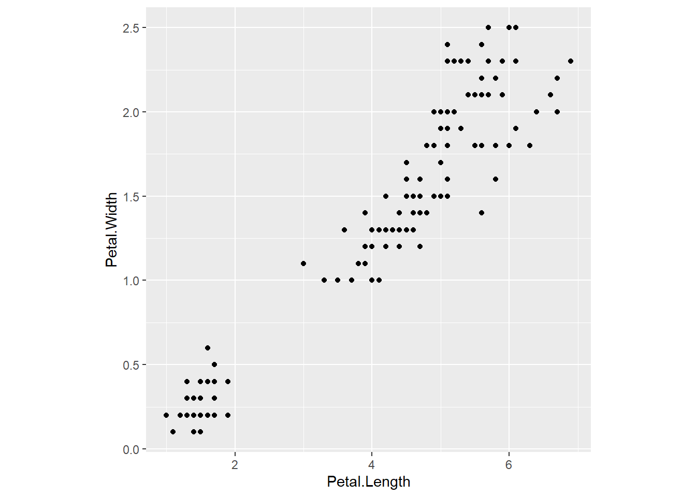
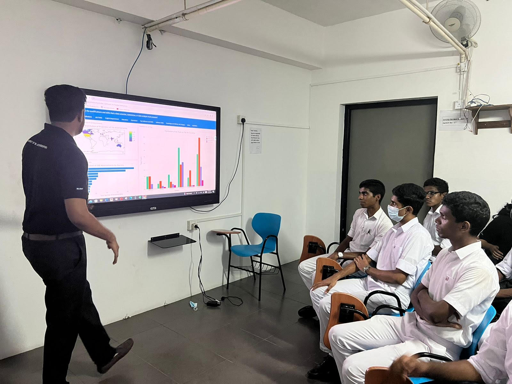
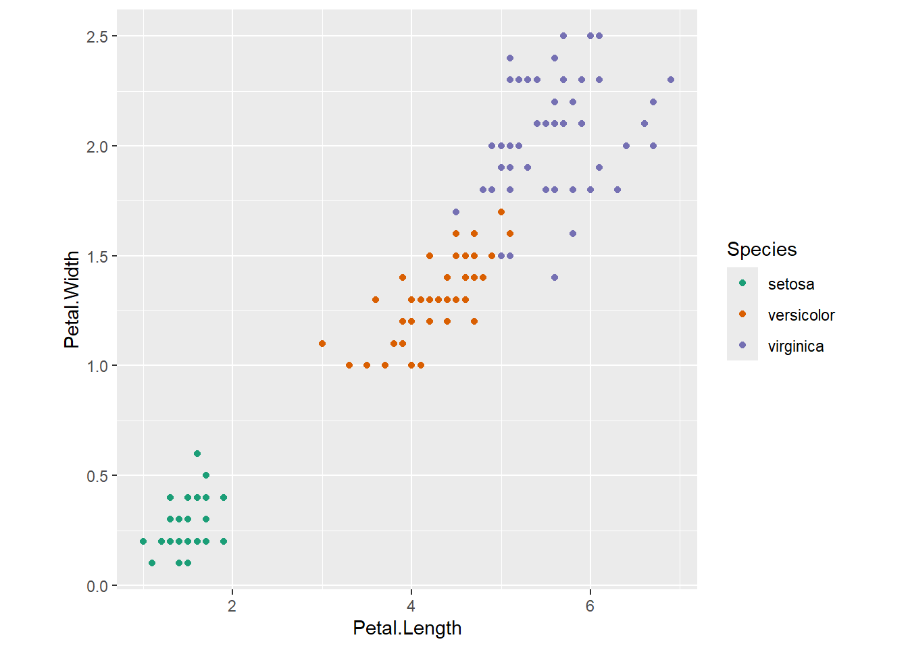
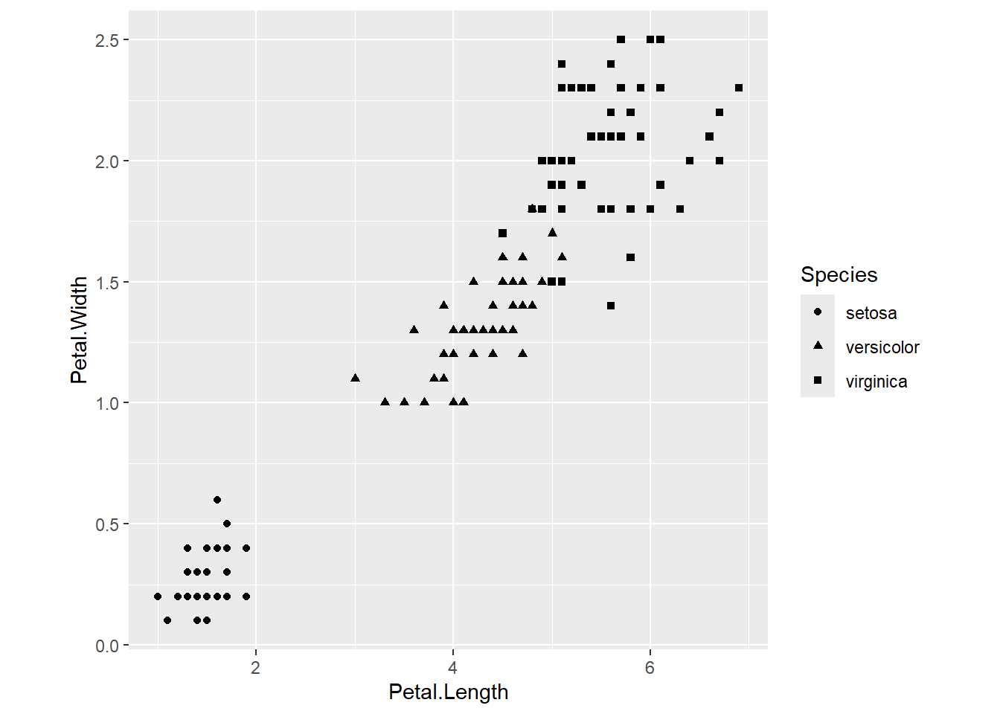
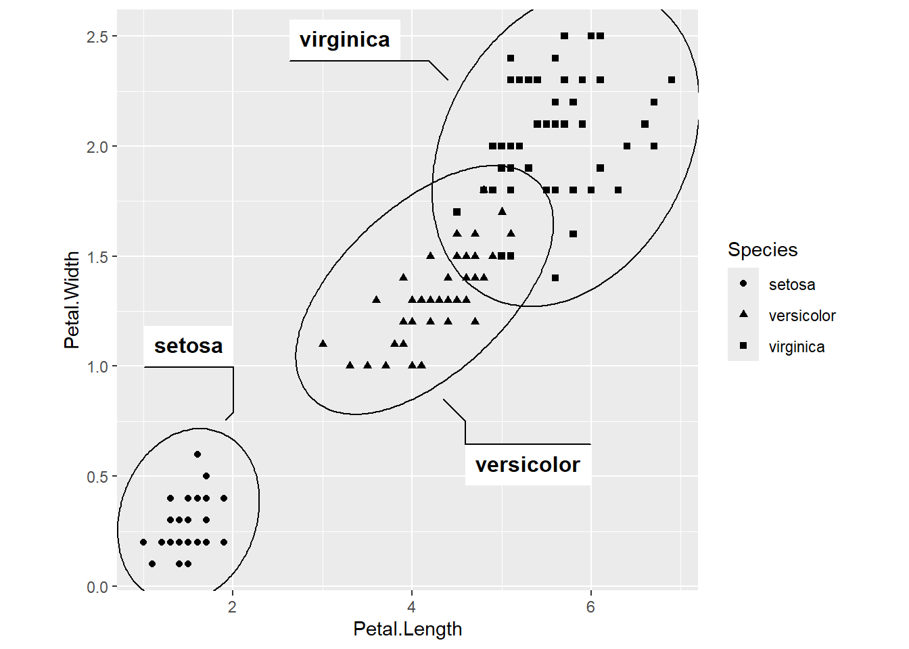
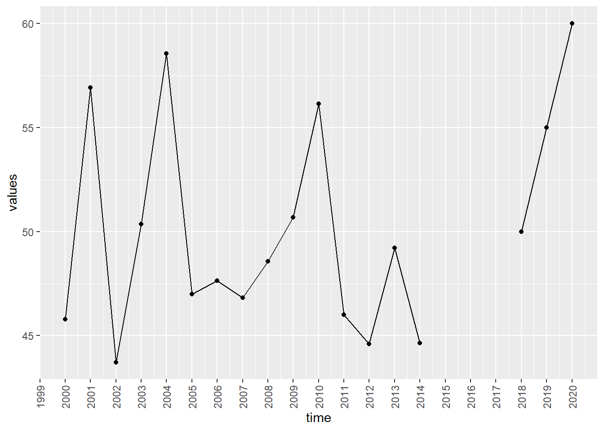
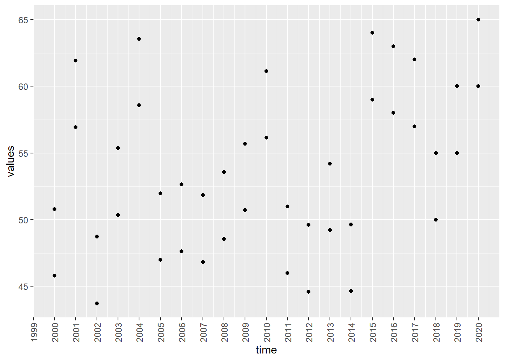
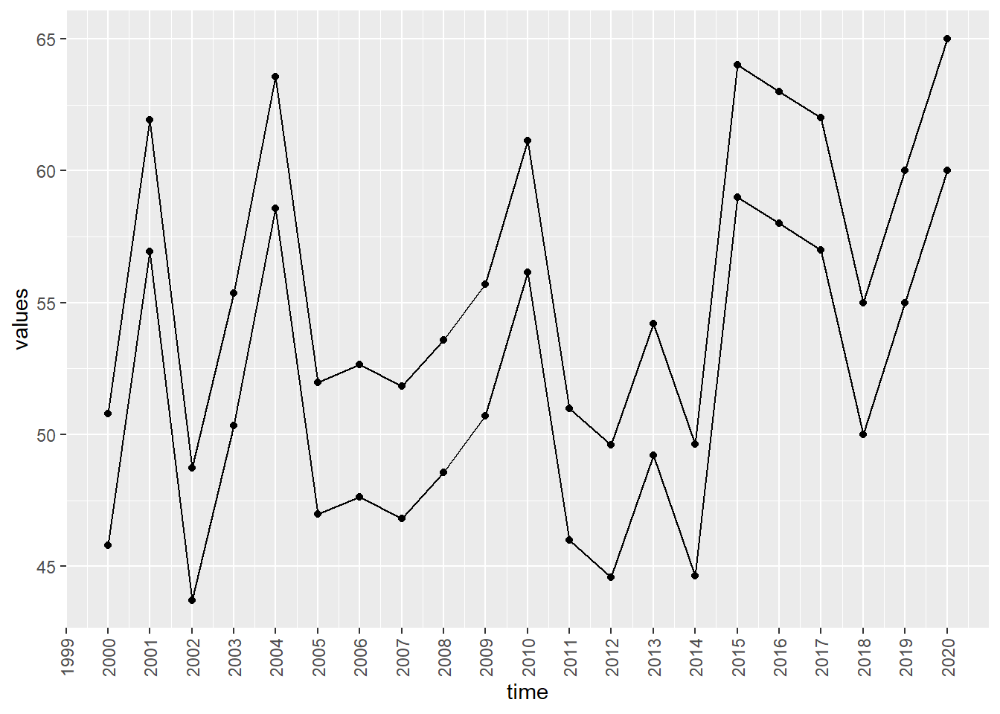

Introduction to Data Visualisation
Where have you seen data visualisations?
What is data visualization?
Definition 1: The process of transforming data into graphical representations for the purpose of exploration, confirmation, or presentation.
Definition 2: The visual representation and presentation of data to facilitate understanding.
Definition 2 is by Andy Kirk (The author of “Data Visualisation: A Handbook for Data Driven Design”)
What is data visualization?
The visual representation and presentation of data to facilitate understanding.
Andy Kirk (The author of “Data Visualisation: A Handbook for Data Driven Design”)
What is data visualization?
The visual representation and presentation of data to facilitate understanding.
Andy Kirk (The author of “Data Visualisation: A Handbook for Data Driven Design”)
How are you going to plot your data?
Building blocks of charts
marks: points, lines, or shapes to represent data
attributes: visual variations of marks: different scales, positions, and sizes
What is data visualization?
The visual representation and presentation of data to facilitate understanding.
Andy Kirk (The author of “Data Visualisation: A Handbook for Data Driven Design”)
Design decisions as a means for communicating to others
application of interactivity
features of annotations
legend, titles, scales, caption
dimensions of the chart area
What is data visualization?
The visual representation and presentation of data to facilitate understanding.
Andy Kirk (The author of “Data Visualisation: A Handbook for Data Driven Design”)
Three phases of understanding (Three different cognitive focuses)
Perceiving -> Interpreting -> Comprehending
Perceiving
What do I see?: Reading the chart
What data is shown?
What is on x-axis/ y-axis?
What do colours represent?
What range of values are displayed?
Stepped magnitude judgement?
Where are the least and most/ average?/largest and smallest?
Interpreting
Translate what you see into quantitative and/or qualitative meaning
Reader’s ability to perform relational interpretation
Are these patterns normal, expected or unusual?
What features are interesting?
What features are important given the subject knowledge?
If you do not have any knowledge about the subject your understanding stops after the perceiving phase.
Comprehending
What does it mean to me?
What does one do with this understanding?
Have I learned something I did not know before?
Was it confirmed I did not know before?
Perceiving: What does it show?
Interpreting: What does it mean?
Comprehending: What does it mean to me?
Why visualisations?
Faster grasp: Comprehend huge amount of information into the brain very quickly
Can inspire new questions and further exploration
Provide information with less clutter and less space
More accessible
Easier to understand
Easier to explain
More memorable
Bad graphs are everywhere!
No one intentionally creates a bad graph. But it happens. Why is that?
How can I develop my ability to produce powerful data visualisations?
Success comes mostly from experience, mostly from trial and error in discovering what works and what doesn’t.
Exploratory vs Explanatory
Exploratory
When you have a whole bunch of data and you are not sure what types of trends, relationships, etc. it contains.
Find the story that the data has to tell you.
Explanatory
- When you already know what the data has to say and you are trying to tell that story to somebody else.

Three important parties
Data
Designer
Reader
Data
Categorical?
Ordinal?
Discrete or continuous?
How they are bounded?
Netwroks/ trees/ hierarchy
Collection of items, groups, sets, clusters
Spatial field: scalar, vector, tensor
Outliers
How many dimensions?
Designer
Planning:
What is the output format? (printout, mobile app, etc)
Time scale
Tools
Who is your audience (How much assistance do they need?, How familiar are they with the charts?)
Identify the goal
What point or message are you trying to convey?
What information should they be able to learn from your visualisations?
Examples: Compare performances, Identify trends, Find outliers, Find relationshsips
Reader
Contextual considerations for the reader
Perceiving: What do colors means? What is on x-axis, y-axis?
In what direction does the reader follow the plot?
Which types of plots are they familiar with?
Gestalt Principles of Visual Perception
How do we perceive information?
Proximity
We perceive objects close to each other as belonging to a group.
Similarity
Our brain group objects that share the same colour, shape, and direction


Enclosure
We perceive objects as belonging to a group when they are enclosed in a way that creates a boundary or border around them.

Closure
Our brains tend to complete missing parts in the picture.
time <- 2000:2020
time <- lubridate::ymd(time, truncated = 2L)
set.seed(5)
aa <- rnorm(15, mean=50, sd=5)
values <- c(aa, NA, NA, NA, 50, 55, 60)
df <- tibble::tibble(time, values)
ggplot(df, aes(x=time, y=values)) + geom_path() + geom_point() +
scale_x_date(date_breaks = "1 year", date_labels = "%Y") + theme(axis.text.x = element_text(angle = 90, vjust = 0.5, hjust=1))Warning: Removed 3 rows containing missing values or values outside the scale range
(`geom_point()`).
Connectedness
We perceive objects connected to each other as a single group.
time <- 2000:2020
time <- rep(lubridate::ymd(time, truncated = 2L), times= 2)
set.seed(5)
aa <- rnorm(15, mean=50, sd=5)
values <- c(aa, 59, 58, 57, 50, 55, 60)
values <- c(values, values+5)
group <- c(rep(1, 21), rep(2, 21))
df <- tibble::tibble(time, values, group)
ggplot(df, aes(x=time, y=values)) + geom_point() +
scale_x_date(date_breaks = "1 year", date_labels = "%Y") + theme(axis.text.x = element_text(angle = 90, vjust = 0.5, hjust=1))
time <- 2000:2020
time <- rep(lubridate::ymd(time, truncated = 2L), times= 2)
set.seed(5)
aa <- rnorm(15, mean=50, sd=5)
values <- c(aa, 59, 58, 57, 50, 55, 60)
values <- c(values, values+5)
group <- c(rep(1, 21), rep(2, 21))
df <- tibble::tibble(time, values, group)
ggplot(df, aes(x=time, y=values, group=group)) + geom_point() + geom_line() +
scale_x_date(date_breaks = "1 year", date_labels = "%Y") + theme(axis.text.x = element_text(angle = 90, vjust = 0.5, hjust=1))
Continuity
Humans tendency is to see shapes as continuous to the greatest degree possible. The human eye/brain follows lines, curves or a sequence of shapes to create pathways.
library(tidyverse)── Attaching core tidyverse packages ──────────────────────── tidyverse 2.0.0 ──
✔ dplyr 1.1.4 ✔ readr 2.1.5
✔ forcats 1.0.0 ✔ stringr 1.5.1
✔ lubridate 1.9.3 ✔ tibble 3.2.1
✔ purrr 1.0.2 ✔ tidyr 1.3.1
── Conflicts ────────────────────────────────────────── tidyverse_conflicts() ──
✖ dplyr::filter() masks stats::filter()
✖ dplyr::lag() masks stats::lag()
ℹ Use the conflicted package (<http://conflicted.r-lib.org/>) to force all conflicts to become errorsggplot(mpg) +
geom_bar(aes(x = class))
Figure and Ground
Human’s ability to visually differentiate between an object and its background.
Example 1:

Example 2: Click here: https://thiyangt.github.io/coviddashboard/
Simplicity
The law of simplicity indicates that our mind perceives everything in its simplest form.
library(gganimate)No renderer backend detected. gganimate will default to writing frames to separate files
Consider installing:
- the `gifski` package for gif output
- the `av` package for video output
and restarting the R sessionp <- ggplot(df, aes(x=time, y=values, group=group)) +
geom_line() +
geom_segment(aes(xend=max(time), yend = values), linetype=2, colour='blue') +
geom_point(size = 3) +
geom_text(aes(x = max(time)+.1, label = sprintf("%5.0f", values)), hjust=0) +
transition_reveal(time) +
view_follow(fixed_y = TRUE)+
coord_cartesian(clip = 'off') +
enter_drift(x_mod = -1) + exit_drift(x_mod = 1) +
theme_bw() +
theme(panel.border = element_blank(),
panel.grid.major = element_blank(),
panel.grid.minor = element_blank(),
axis.line = element_line(colour = "black"),
plot.margin = margin(5.5, 40, 5.5, 5.5))
animate(p, fps=5)Warning: No renderer available. Please install the gifski, av, or magick package to
create animated outputCommon fate
When objects move in the same direction or at a similar pace, our brains automatically group them together. (eg: a flock of birds)
library(gapminder)
library(gganimate)
ggplot(gapminder, aes(gdpPercap, lifeExp, size = pop, colour = country)) +
geom_point(alpha = 0.7, show.legend = FALSE) +
scale_colour_manual(values = country_colors) +
scale_size(range = c(2, 12)) +
scale_x_log10() +
#facet_wrap(~continent) +
# Here comes the gganimate specific bits
labs(title = 'Year: {frame_time}', x = 'GDP per capita', y = 'life expectancy') +
transition_time(year) +
ease_aes('linear')Warning: No renderer available. Please install the gifski, av, or magick package to
create animated outputNULLPreattentive attributes that we can use in our visualisations to direct our readers attention.
Watch this video.
Exercise
Draw a plot to show the relationship between Life Expectancy and Countries
library(gapminder)
library(tidyverse)
gapminder |>
filter(year == 2007, continent == "Americas") |>
select(country, lifeExp)# A tibble: 25 × 2
country lifeExp
<fct> <dbl>
1 Argentina 75.3
2 Bolivia 65.6
3 Brazil 72.4
4 Canada 80.7
5 Chile 78.6
6 Colombia 72.9
7 Costa Rica 78.8
8 Cuba 78.3
9 Dominican Republic 72.2
10 Ecuador 75.0
# ℹ 15 more rowsAcknowledgement
Kirk, A. (2016). Data visualisation: a handbook for data driven design
Gestalt Laws Applied to Data Visualization, https://daydreamingnumbers.com/